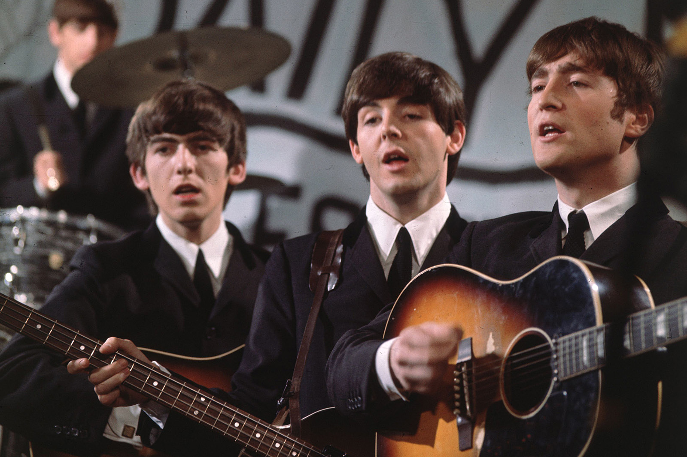

With the Beatles!!!
Come to 1962-1970!!

Born in Livepool
We hope you will enjoy the show.

The Beatles Official Site
https://www.thebeatles.com/
Come to 1962-1970!!
We hope you will enjoy the show.
https://www.thebeatles.com/
비틀즈(The Beatles)는 1960년 리버풀에서 결성된 영국의 록 밴드다.
존 레논, 폴 매카트니, 조지 해리슨, 링고 스타로 구성된 이 밴드는 록의 시대에서 최선두 주자이자 가장 영향력 있는 밴드로 널리 인정받고 있다.
스키플, 비트 음악과 1950년대 로큰롤에 뿌리를 둔 비틀즈는 이후 팝 발라드와 인도 음악에서 사이키델릭과 하드 록까지 그 범위를 확장시키면서 여러 음악 스타일을 실험했고, 종종 혁명적인 방식으로 클래식적인 요소와 관습에서 벗어난 녹음 기술을 결합하기도 했다.
1963년 이들의 어마어마한 유명세는 "비틀마니아"로 첫 표출되었으나, 그룹의 음악이 향후의 수년에 걸쳐 주된 작곡가인 레논과 폴 매카트니를 구심점으로 세련되게 성장하면서, 이들은 1960년대 반문화가 내세운 사상의 결정체적 존재로 간주되었다. 출처 : 위키백과
Studio Albums

Please Please Me
1963

With the Beatles
1963

A Hard Day's night
1964

Beatles for Sale
1964

Help!
1965

Rubber Soul
1965

Revolver
1966

Sgt. Pepper Lonely Hearts Club Band
1967

Magical Mystery Tour
1967

The Beatles(White Album)
1968

Yellow Submarine
1968

Abbey Road
1969

Let it be
1970
We love our fans!
If You Beatle Mania??
Please Follow My Site!!
Deagu Univercity
Phone: 010-9503-####
Email: cheol1201@naver.com
비틀즈를 좋아하는 젊은 대학생입니다.